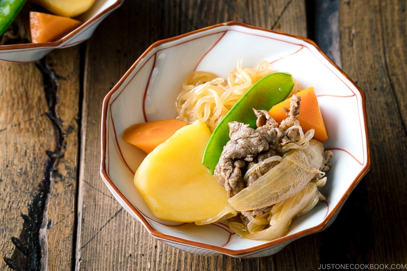

Nikujaga (肉じゃが)

Description
With chunks of potatoes, onion, and
thinly sliced beef simmered in savory
and sweet dashi broth, Japanese Meat
and Potato Stew (Nikujaga) is one of
the most iconic home-cooked dishes in
Japan.
Ingredients
- Potatoes
- Thinly sliced beef or pork
- Onion
- Shirataki Noodles
- Carrot
- Green vegetables (Most commonly snow peas, green beans, or green peas)
- Seasonings – soy sauce, sugar, mirin, sake